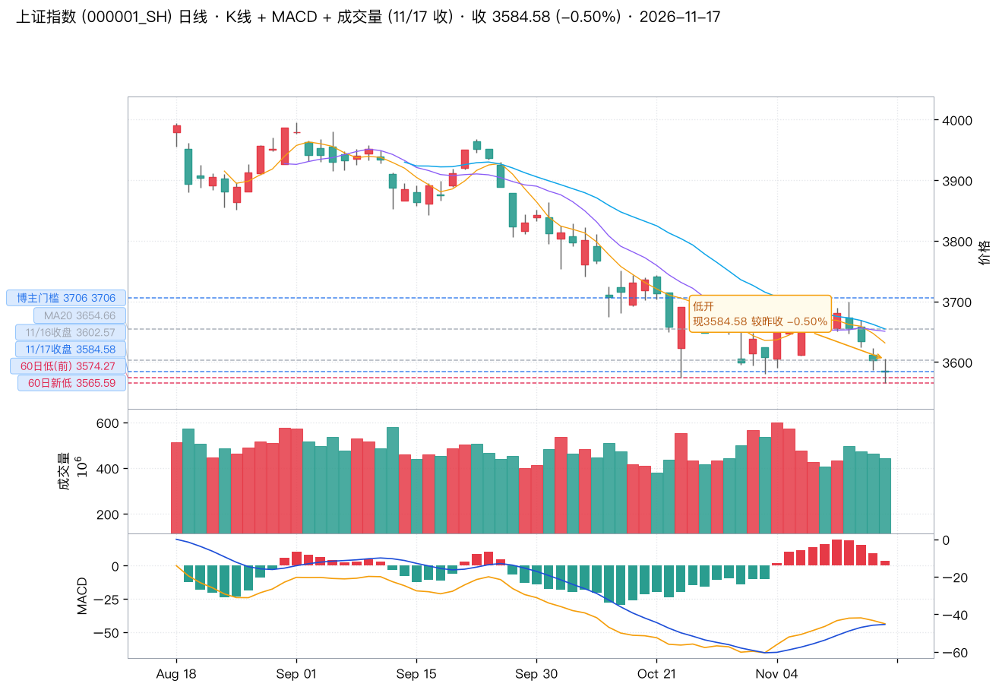
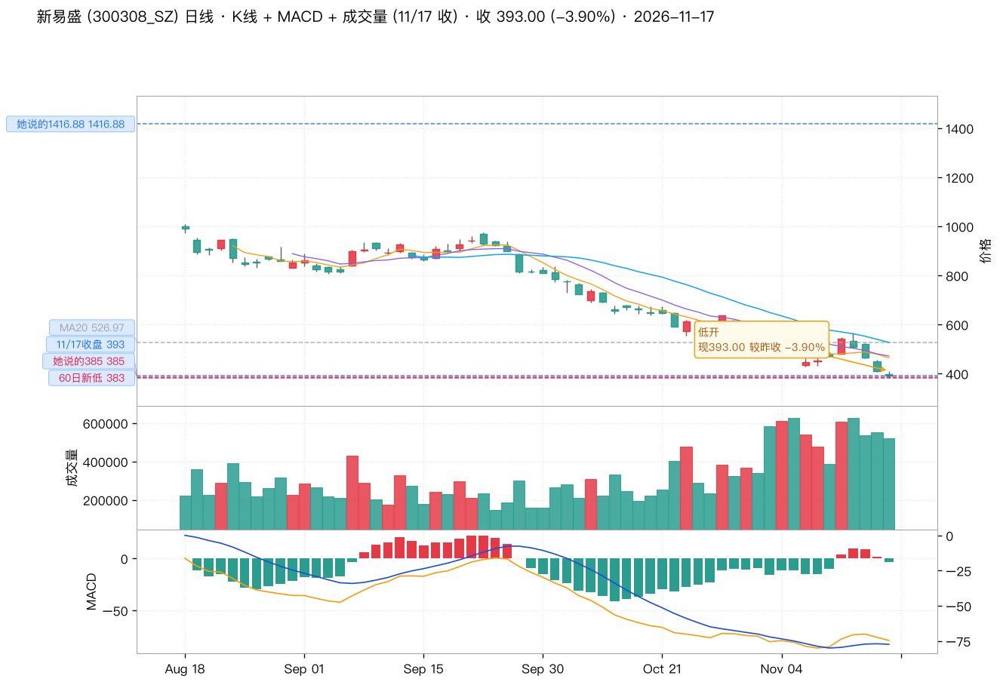
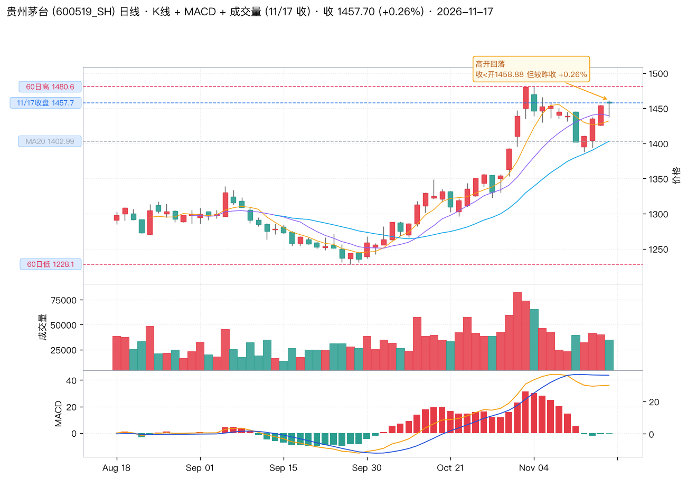
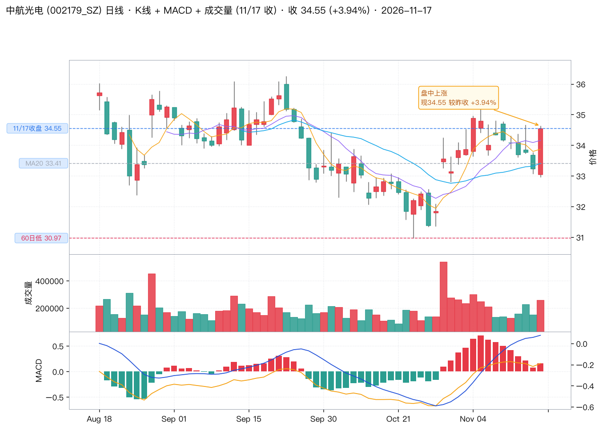

📈 wu2198 - 2026-11-17（周二 2263点触达，重新杀进来）
🟢🟢 22:02「我既然能够在 5 月份高位撤离，这次重新杀进来，肯定会信心满满……」 —— 首次明确说已重新建仓，不是「等」；但没给标的、点位、仓位。 14:56 的「本周 2263 点」已被创业板最低 2263.74 分毫不差触达，10:28 的「CPO 龙头 -72.82%」也分毫不差。 位置到位、她已动手，盘面还没转（13:38「未见可扭转局面的力量」）—— 只做白酒、方向等回踩的科技龙头、军工只做池内领涨。
一、博主说了什么（10 条）
| 时间 | 信号 | 原文 | 判读 / 日线实测 |
|---|---|---|---|
| 06:07 | ⚪ 外盘 | 昨晚美股下跌：道指跌739点、纳指跌626点、标普跌145点 | 三个数字分毫不差：11/16 实测 −739.38 / −626.51 / −145.08。 |
| 09:39 | 🟢 板块点名 | GPU，半导体等目前局部走红！ | 「局部」成立、「等」不成立：存储池 -2.32%（1 涨 7 跌），寒武纪 +0.76% 唯一红。 |
| 10:07 | 🟢🟢 位置定性 | 以前给大家分析过 C 不一定是机会，但是 C5 绝对是机会。 | 把「等」具体化成 C5。11:14 重申「有技术的 C3 布局，稳健的 C5 完成之后干」，比 11/13 更明确。 |
| 10:28 | 🟢🟢 自我验证 | CPO 龙头这波从 1416.88 到今天的 385 元，跌了 1031.88 元，幅度达 72.82%；疯狂的时候像赌博！ | 分毫不差，标的 = 新易盛 300308：前复权峰值 1416.88（6/22），今日盘中最低 383.00（发帖时价约 385），(1416.88−385)/1416.88 = 72.83%。 |
| 10:31 | 🟢🟢 立场表态 | 现在的位置，没有什么思考的余地。要么继续被干，要么干！ | 从观望切到主动。当日沪指、创业板双创 60 日新低 → 她在最低位喊「干」。 |
| 10:47 | 🟢 方向 | 科技类股杀估值去杠杆，清洗干净之后，高成长+行业向好的科技股会走出局部行情。 | 把 11/16 科技崩盘定性为杀估值而非逻辑破坏。但算力池 -0.36%、存储池 -2.32% → 清洗尚未结束。 |
| 13:38 | 🟡 收盘前定性 | 市场上抵抗力量是有的，但还未见出现可扭转局面的力量。 | 当日最准的一句：涨 1326 / 跌 4119，尾盘跌停 40→103 家，创业板收盘仍低于 11/16 新低 → 有抵抗、无反转。 |
| 14:54 | 🟡 盘面反应 | 下砸拉起，好事！ | 尾盘从低位回拉，创业板自 2263.74 拉回 28.46 点，但收盘仍跌 -1.20%。 |
| 14:56 | 🟢🟢 关键位 | 本周 2263 点可以了，接下来等吃肉了！ | 本期最硬的核验：创业板最低 2263.74，与 2263 点分毫不差；她第一次在 C 杀期间给出可执行点位。 |
| 22:02 新增 | 🟢🟢 建仓表态 | 我既然能够在 5 月份高位撤离，这次重新杀进来，肯定会信心满满…… | 首次明确「已重新建仓」，与 10:31、14:56 同一条链；但只有表态，没有标的/点位/仓位 → 只拿方向，不拿买点。21:46 小米那条无信号。 |
二、大盘关键点位
上证指数 · 3584.58（-0.50%）

开 3585.67 / 高 3604.98 / 低 3565.59 / 收 3584.58。 最低 3565.59 = 新 60 日低（前低 3574.27 已破）；3706 差 121.42 点（3.28%），MA20 3654.66 失守。
创业板指 · 2292.20（-1.20%）

开 2299.97 / 高 2343.15 / 低 2263.74 / 收 2292.20。 最低 2263.74 = 她的 2263 点 = 新 60 日低；收盘较日低拉回 28.46 点，仍低于 11/16 新低 2308.90；2626 差 333.80 点（12.71%）。
三、最值得关注的 3 个板块
| 板块 | 11/17 收盘实测 | 博主口径 / 打法 |
|---|---|---|
| ① 白酒 / 大消费 首选 · 唯一正收益 |
池 5 只 4 涨 1 跌，均值 +0.43%，额 96 亿 泸州老窖 +1.67%、山西汾酒 +0.89% / 古井贡酒 -1.05% |
唯一收正的池。茅台收 1457.70、站上 MA20 1402.99，距 60 日高 1480.60 仅 22.90 点。只做茅台。 |
| ② 科技龙头（GPU / 存储） 方向 · 等回踩 |
存储池 -2.32%（1 涨 7 跌），额 394 亿 寒武纪 +0.76%、江波龙 -0.40% / 澜起科技 -6.57% |
她 10:47 定的方向 + 22:02 已动手：只做高成长龙头，不看板块平均。寒武纪 +0.76% 唯一红、站上 MA20 891.64；但 CPO 池 -3.20% 说明洗盘没完 → 等回踩分批，不追高。 |
| ③ 军工 观察 · 池内一枝独秀 |
池 12 只均值 -0.07%（4 涨 7 跌），额 67 亿 中航光电 +3.94%、中航机载 +1.43% / 国光电气 -3.77% |
11/16「军工五六只冲板」收盘没兑现、今天补上：中航光电 +3.94% 放量 140%、收在当日最高附近。只做池内领涨。 |
新易盛（300308）· 393.00（-3.90%）—— 她 10:28 那笔账

高 410.96 / 低 383.00（新 60 日低）/ 收 393.00，额 205 亿。 从 1416.88 到今天 −72.83%，与她 10:28 口算一致；MA20 526.97 远在头顶 ——「洗盘没完」的实证。
四、3 支个股
| 代码 名称 | 收盘 | 涨跌 | 成交额 | 关键位 | 实测印证 / 动作 |
|---|---|---|---|---|---|
| 600519 贵州茅台 | 1457.70 | +0.26% | 51.0 亿 | MA20 1402.99 · 60 日高 1480.60 | 唯一正收益池的龙头，逆势收红、站上 MA20 1402.99，量能 93% 未爆量。低吸不追高，破 MA20 放弃。 |
| 688256 寒武纪 | 904.80 | +0.76% | 122.5 亿 | MA20 891.64 · 60 日高 1170.00 | 正对她 10:47「高成长+行业向好的科技股」—— 存储池 1 涨 7 跌里唯一的红，站上 MA20 891.64。回踩 MA20 可分批，不追高。 |
| 002179 中航光电 | 34.55 | +3.94% | 8.8 亿 | MA20 33.41 · 60 日高 36.25 | 全场最强个股：放量 140%、收在当日最高 34.63 附近，站上 MA5/MA10/MA20。回踩 MA20 不破可分，不追高。 |
贵州茅台（600519）· 1457.70（+0.26%）

高 1461.60 / 低 1437.71 / 收 1457.70，逆势小阳；MA20 1402.99 在下方支撑，60 日高 1480.60 距今 22.90 点。
寒武纪（688256）· 904.80（+0.76%）

高 950.00 / 低 886.00 / 收 904.80，站上 MA20 891.64；60 日高 1170.00 在左上（距今 29.3%）。
中航光电（002179）· 34.55（+3.94%）

高 34.63 / 低 32.95 / 收 34.55，放量阳线站上 MA20 33.41；60 日高 36.25 是第一道压制，60 日低 30.97 在下方。
五、11/18（周三）盯什么（5 条）
- 她给不给建仓的落地条件 —— 22:02 只有表态，没给标的、点位、仓位；11/18 仍不给，就只是情绪信号。
- 创业板 2263.74（她的 2263 点）不破 —— 已触达，破了下一目标 2200 整数关。
- 沪指 60 日新低 3565.59 不破 —— 破了说明她的「位置」判断还要下修。
- 跌停从 103 家回落 + 成交额回到 1.6 万亿以上 —— 今天缩量 268 亿；缩量止跌不算止跌。
- CPO 龙头是否止跌 —— 新易盛收 393.00、新 60 日低 383.00；它不企稳，科技的「洗完」就不成立。
六、偏差记录
| 项 | 博主口径 | 实测 / 处理 |
|---|---|---|
| 14:56「本周 2263 点」 分毫不差 | 本周 2263 点可以了，接下来等吃肉了 | 创业板指最低 2263.74，与 2263 点分毫不差；收盘 2292.20 较日低拉回 28.46 点。本期最硬的核验——她第一次在 C 杀期间给出可执行点位。 |
| 10:28 CPO 龙头跌幅 分毫不差 | CPO 龙头从 1416.88 到今天的 385 元，跌了 1031.88 元，幅度达 72.82% | 标的 = 新易盛 300308：前复权峰值 1416.88（6/22），今日盘中最低 383.00、收盘 393.00。 (1416.88−385) = 1031.88、占比 72.83%，与她的口算完全一致；再创 60 日新低。 |
| 22:02 建仓表态 无法核验 | 我既然能够在 5 月份高位撤离，这次重新杀进来，肯定会信心满满…… | 只有表态，没有标的/点位/仓位 → 只当方向信号，不当买点。与 13:38 不矛盾：她赌 C5 空间，不是今天的盘面。 |
| 双门槛 3706 / 2626 继续搁置 | 11/17 全天未提门槛，只给 2263 点与 C5 口径 | 沪指差 121.42 点、创业板差 333.80 点。 门槛没松、新点位出现——框架从「等收复 3706/2626」换成「等 C5 完成」，点位换了，纪律没换。 |
免责声明：本报告为公开微博内容整理与技术面统计，不构成投资建议； 「3 板块 + 3 个股」是博主观点 + 实测强度的归纳，股市有风险，投资需谨慎。
报告生成：2026-11-17 收盘后增补版 · 数据源 weibo skill + Tushare Pro 日线 + 东方财富快照 ·
脚本 collect_tushare_20261117.py / make_wu2198_charts_20261117_close.py /
gen_wu2198_report_20261117_close.py。